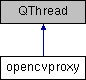

Face picturing
1
Face picturing project using Kuka robotic system and openCV
Public Slots
|
Signals
|
Public Member Functions
|
List of all members
opencvproxy Class Reference
Inheritance diagram for opencvproxy:

Public Slots
void
listenImg
(QString)
Signals
void
sendImg
(QString)
Public Member Functions
opencvproxy
(QObject *parent=nullptr)
void
run
()
The documentation for this class was generated from the following files:
C:/Users/X/Desktop/ws/qt_w/facePicturing/
opencvproxy.h
C:/Users/X/Desktop/ws/qt_w/facePicturing/opencvproxy.cpp
Generated by
1.8.17
 1.8.17
1.8.17